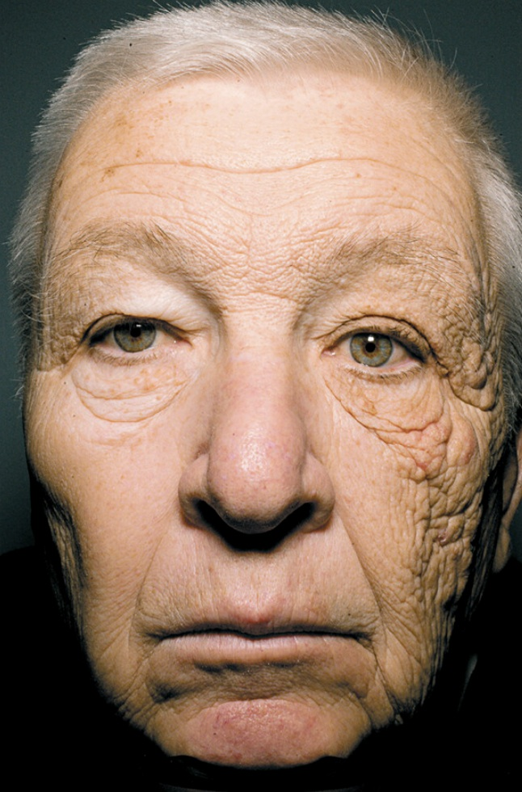

肌が綺麗になると清潔感が違います！（女性にもおすすめ）

１ はじめに
前回の記事で恋愛では、女性からモテそうに見えることが重要と書きました。
モテそうに見えるためには、「清潔感」がかなり大事なキーワードになります。
相手の方が「清潔感」を感じるためにはいくつかポイントがありますが、肌が綺麗なことはとても有利です。今回は肌を綺麗にする効果的な方法をお伝えします。（今回の記事は女性にもおすすめの内容になります）
２ 肌を綺麗にするために大事なこと
肌を綺麗にするために大事なことをお伝えします。
肌が綺麗になると、健康的に見えますので、恋愛においてはとても有利です。
① スキンケア（洗顔、保湿）
まずは日々のスキンケアが基本になります。
既に実践されている方も多いかと思いますが、毎日洗顔と保湿を行うのが大事です。
スキンケア用品も無数にあるので、どれを選んでいいのか迷っている方も多いかもしれませんが、スキンケアに有効な成分は科学的に証明されています。
効果があるかないか不明なものを使い続けるよりも、根拠がしっかりしたものを使っていく方が確実に効果が表れます。
根拠がしっかりした成分は「レチノイド」、「ナイアシンアミド」、「ヒドロキシ酸（アルファヒドロキシ酸（AHA）とベータヒドロキシ酸（BHA））」です。
ただし、「レチノイド」と「ヒドロキシ酸」は刺激が強いため、同時に使うことは推奨されていません。
スキンケア製品を購入する際には、これらの成分が含まれているものを購入するようにしましょう。
【スキンケアに有効な成分】
それぞれ次の効果があります。
・レチノイド
→細胞のターンオーバーを促進、ニキビの改善、小じわやシワの軽減
・ナイアシンアミド
→肌のバリア強化、炎症の軽減、毛穴を目立たなくする、皮脂の分泌の調整、色素沈着を改善
・ヒドロキシ酸
→ニキビ、色素沈着、老化の兆候を改善
（「レチノイドは皮膚のレチノイン酸受容体に結合し、細胞のターンオーバーを促進し、コラーゲンとエラスチンの生成を増加させ、ニキビを改善し、小じわやシワを軽減します」）
“Retinoids bind to retinoic acid receptors in the skin, promoting cell turnover, increasing collagen and elastin production, improving acne, and reducing fine lines and wrinkles,”（「ナイアシンアミドは、肌のバリアを強化し、炎症を軽減し、毛穴を目立たなくし、皮脂の分泌を調整し、色素沈着を改善します」）
“Niacinamide strengthens the skin barrier, reduces inflammation, minimizes pores, regulates oil production, and improves hyperpigmentation,”
（「AHAとBHAはどちらも、ニキビ、色素沈着、老化の兆候を治療することが臨床的に証明されています」）
“Both AHA and BHAs have been clinically proven to treat acne, hyperpigmentation, and the signs of aging,”
引用元_The Only 4 Skincare Ingredients Proven To Work, According To Research＿Women’s Health＿Jan 26, 2026
【レチノールと併用できない成分】
レチノールは併用できるスキンケアの組み合わせが難しい美容成分です。併用ができない代表的な成分は主に2つあります。
・ビタミンC
・サリチル酸
・過酸化ベンゾイル、AHA、BHA、PHA引用元_【バクチス通信】バクチオールはレチノールやビタミンCと併用不可？＿BAKUCHIS＿2024年11月12日
② スキンケア（日焼け止め）
紫外線による肌への悪影響は絶大です。（紫外線による肌の老化現象のことを「光老化」といいます。）紫外線を浴びることが、肌のシミ、シワやたるみの原因となります。肌の老化の８割がこの光老化によるものとまで言われています。
次の写真は何十年と片側だけ紫外線を浴びたトラックドライバーの写真です。顔の左側と右側で肌の状態が大きく違うことが分かります。紫外線が肌に与えるダメージが良く分かりますね。

【紫外線による肌へのダメージの研究】
そこで、紫外線を多く浴びた肌と浴びていない肌のコラーゲンを比べて、その影響を調べたところ、やはりその影響は大きかったことが証明されたのです。引用元_紫外線による肌ダメージを見たら、本当にすごかった！＿資生堂＿
洗顔や保湿に比べて、日焼け止めの対策を行っていない男性は多いですが、日焼け止めの対策を行うことを強くおすすめします。
具体的には毎日日焼け止め（少なくともSPF３０以上）を塗る、日傘の使用等になります。
日焼け止めは汗や摩擦で落ちてしまうので、朝だけではなく、日中になるべく塗り直しを行いましょう。
また、男性は少し抵抗があるかもしれませんが、携帯用の日傘を持ち歩くことをおすすめします。
③ 食事（野菜・果物を多く食べる）
人間は食べるものからできているとは良く言われますが、野菜や果物を多く食べることによって、肌の状態が良くなることが証明されています。
特に野菜に多く含まれる「カロテノイド」が肌に蓄積された異性をより魅力的と感じる研究結果があります。
「カロテノイド」にはα-カロテン、β-カロテン、β-クリプトキサンチン、ルテイン、ゼアキサンチン、リコピン等があり、それぞれ多く含まれる野菜が異なりますが、にんじん、ほうれんそう、トマトやケール等の緑黄色野菜に多く含まれています。
また油に溶けやすい性質があるため、オリーブオイルなどと一緒に摂るとより効果的です。
【肌に含まれるカロテノイドによる魅力度の評価】
（健康な高カロテノイド色が顔の皮膚色として提示された場合、参加者は不健康な（低カロテノイド）皮膚色の顔と比較して、その顔をより魅力的であると評価した。）
When healthy high-carotenoid colour was presented as skin colour in faces, participants rated the faces as more attractive compared with faces with unhealthy (low-carotenoid) skin colour.
④ 運動
運動も肌に良い影響があります。
運動することによって、血流が良くなり肌の赤みが増すことになります。
肌の赤みも異性の魅力度を上げる研究結果があります。（研究では女性は見た目の男らしさよりも、黄色や赤みの強い肌を魅力的と感じる結果となっています）
特に運動には肌以外にも、体型を良くする効果がありますので、是非時間を見つけて取り組んでみてください。
【運動による肌の血流の改善効果】
（定期的な運動習慣は、身体活動中の皮膚血流を増加させるだけでなく、皮膚血管拡張機能も強化します。皮膚の水分補給は真皮深層と皮膚表面との間の水分勾配によって促進されるため、十分な皮膚血流を維持することは、皮膚の水分補給を維持する上で重要な要素です。この血流改善は、より明るく健康的な顔色に貢献します。）
Engaging in a regular exercise regimen not only augments cutaneous blood flow during physical activity but also enhances cutaneous vasodilatory function. Given that skin hydration is facilitated by a moisture gradient between the deeper dermal layers and the skin surface, sustaining adequate skin blood flow is a crucial factor in maintaining skin hydration.This improved perfusion contributes to a more radiant and healthy complexion.
【顔色と男らしさの魅力度の評価】
同氏の研究チームは、イングランド北部で平均年齢27歳の白人男性20名の顔写真を撮影し、顔色と男らしさの度合いを数値化した。そしてその写真を平均年齢19歳の白人女性21名に見せたところ、女性たちは黄味と赤味の強い肌の男性が最も魅力的であると判定したという。
引用元_男らしさより健康的な顔色が好まれる＿National Geographic Society.＿2010.11.05
３ まとめ
肌が綺麗な人は健康的に見えます。
健康的な異性は魅力的に見えますよね。
自分の子供を育てていくには、パートナーの健康はとても重要です。また、パートナーが健康であればその子供も健康的である可能性が高くなります。
人間は本能的に、健康的な人をパートナーに選んでいると言えるでしょう。
今回紹介したものは、即効性はありませんが、健康的で清潔感のある肌は大きな武器になります。
できるだけ普段の生活に取り入れていきましょう。
Q１: 効果の認められたスキンケアの成分
A1：次の３つの成分
①レチノイド
②ナイアシンアミド
③ヒドロキシ酸
Q２: Q1の成分の使用上の注意点
A２：「レチノイド」と「ヒドロキシ酸」は刺激が強いため、同時に使うことは非推奨
Q３: 肌の老化を防ぐための注意点
A３：太陽の紫外線による肌への悪影響（光老化）は絶大。
SPF３０以上の日焼け止めを使用し、日中も塗りなおす。
また、日傘を携帯する。
Q４: 健康的な肌の色味を作る方法
A４：①野菜や果物を多く食べる。（カロテノイドにより肌に黄色味が加わる）
②定期的に運動する。（血流の改善によって、肌に赤みが加わる）
Q５: 健康的な肌の人が選ばれやすい理由
A５：自分や自分の子供を育てていくためには、パートナーの健康が大事であるため。また子供も健康な遺伝子を持っている可能性が高まるため。